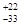

ВЕДОМСТВЕННЫЕ СТРОИТЕЛЬНЫЕ НОРМЫ
ИНСТРУКЦИЯ
ПО ТЕХНОЛОГИИ ГИДРОИЗОЛЯЦИИ
ПОЛИЭТИЛЕНОВЫМИ ЛИСТАМИ МОНОЛИТНЫХ
ПОДЗЕМНЫХ СООРУЖЕНИЙ ТИПА "А"
ВСН 240-88
ОРДЕНА ЛЕНИНА ПРОЕКТНО СТРОИТЕЛЬНОЕ ОБЪЕДИНЕНИЕ
МОССТРОЙ
Разработаны НИИМосстроем Мосстройкомитета (канд. техн. наук Б.В. Ляпидевский; канд.техн.наук М.И. Токарь; Л.В. Городецкая) совместно с МНИИТЭПом (В.А. Сиора; М.П. Махин; Р.Х. Львовский; А.М. Козловский) и трестом Мосфундаментстрой № 3 (В.И. Узков; В.И. Ципко).
Внесены НИИМосстроем Мосстройкомитета
Подготовлены к утверждению Техническим управлением ПСО Мосстрой
Согласованы с Управлением подготовки производства. ПСО Мосстрой, институтом МНИИТЭП, трестом Мосфундаментстрой № 3, отделом охраны труда ПСО Мосстрой, ЦК профсоюза рабочих строительства и промстройматериалов.
При разработке "Инструкции" использована нормативно-техническая документация Донецкого ПромстройНИИпроекта.
|
Проектно-строительное объединение Мосстрой |
Ведомственные строительные нормы |
ВСН 240-88 Вводятся впервые |
|
Инструкция по технологии гидроизоляции полиэтиленовыми листами монолитных подземных сооружений типа "А" |
1.1. Настоящая "Инструкция" распространяется на опытное строительство подземных сооружений типа "А" из монолитного железобетона с использованием в качестве гидроизоляции полиэтиленовых листов и пристенного дренажа из керамзитобетонных плит.
1.2. Для гидроизоляции стен подземных сооружений используются профилированные листы с анкерными ребрами полиэтиленовые (ТУ 21-33-1-85), а днищ и перекрытий - гладкие полиэтиленовые листы (ТУ 21-33-2-85 "Листы полиэтиленовые" или ТУ 6-19-198-82 "Листы из вторичного полиэтилена").
1.3. Температурный интервал, при котором обеспечивается надежная эксплуатация полиэтиленовой гидроизоляции, составляет от -20 до +30°С. Допускается длительная эксплуатация (не более 2-3х месяцев) при температуре до -30°С.
|
Внесены НИИМосстроем |
Утверждены
|
Срок
введения |
1.4. Гидроизоляция из полиэтиленовых листов устойчива к радиационным излучениям. Повышенный уровень радиация (не менее 108 рад.) не является препятствием для применения гидроизоляции.
1.5. Для изготовления профилированных полиэтиленовых листов с анкерными ребрами должен использоваться гранулированный полиэтилен высокого давления базовых марок 102-14 высшего или первого сорта (ГОСТ 16337-77).
1.6. Толщина профилированного полиэтиленового листа с анкерными ребрами должна быть равна 1,3 мм (ширина листа - 1884 мм при расстоянии между анкерными ребрами 40 мм) (ТУ 21-33-1-85). Толщина гладкого полиэтиленового листа должна быть не менее 1 мм. Ширина - не менее 1,1 м (ТУ 21-33-2-85 и ТУ 6-19-198-82). Длина листа в рулоне - не менее 50м.
1.7. Бетон и арматура монолитных участков сооружения должны отвечать требованиям СНиП 3.03.01-87 "Несущие и ограждающие конструкции" и требованиям рабочих чертежей.
1.6. Для пристенных дренажей следует применять керамзитобетонные фильтрующие плиты, отвечающие требованиям ТУ 400-1-213-1-83 "Плиты керамзитобетонные дренажные", имеющие размеры 1000х500х80 мм, с четырьмя продольными сквозными каналами диаметром 35 мм; масса плит - 36 кг.
1.9. Строительно-монтажные работы по гидроизоляции сооружений и устройству пристенного дренажа должны выполняться в соответствии с проектом, общими правилами производства и приемки работ, проектом производства работ, а также настоящей "Инструкцией".
2.1. Рекомендуемое конструктивное решение устройства гидроизоляции и пристенного дренажа подземного сооружения приведено на рис. 1.
2.2. При гидре изоляции вертикальных поверхностей анкерные ребра листов должны располагаться вертикально.
2.3. Для гидроизоляции перекрытия и днища сооружения используется гладкий полиэтиленовый лист.
2.4. Защитная стяжка из раствора (бетона) по полиэтиленовому покрытия должна иметь марку не менее 100 и выполняться толщиной 30-50 мм. При необходимости обеспечения движения по поверхности стяжки механизмов или транспортных средств толщина стенки и ее конструкция принимается по расчету в соответствии со СНиП II-В.8-71 "Полы. Нормы проектирования".
2.5. При наличии под сооружением техподполья в нижней части швов между стеновыми панелями техподполья следует выполнять отверстия. Пол в техподполье должен быть выполнен с уклоном в сторону этих отверстий (см. рис. 1).
2.6. Гидроизоляция перекрытия сооружения должна быть защищена армированной стяжкой.
2.7. Варианты примыкания гидроизоляции днища сооружения к стенам приведены на рис. 2.
2.8. Примыкания оклеечной гидроизоляции и изоляции из полиэтиленовых листов следует выполнять в соответствии с рис. 3.
При этом полиэтиленовый лист со срезанными анкерными ребрами или гладкий полиэтиленовый лист прокладываются между слоями оклеечной гидроизоляции.
В тех случаях, когда изоляция прижимается монтируемым сверху сборным элементом или монолитным бетоном, соединение следует выполнять в соответствии с рис. 3(а). При отсутствии прижима или при примыкании на вертикальных поверхностях соединение может выполняться с помощью дюбелей в соответствии с рис. 3(б).
Рис. 1. Конструкция гидроизоляции и пристенного дренажа:
1 - щебеночная или гравийная обсыпка; 2 - отверстия в швах панелей техподполья; 3 - сварка; 4 - защитная стяжка; 5 - гидроизоляция из гладкого листа; 6 - цементно-песчаный раствор; 7 - бетонная подготовка; 8 - сопутствующий дренаж; 9 - дренажные плиты; 10 - гидроизоляция из профилированного листа
Рис. 2. Варианты сопряжения гидроизоляции стен и днища:
1 - стена; 2 - гидроизоляция из профилированного полиэтиленового листа; 3 - сварка, 4 - гидроизоляция из гладкого полиэтиленового листа; 5 - бетонная подготовка; 6 - выравнивающая стяжка; 7 - плита днища
2.9. Узлы пропуска труб через конструкции с полиэтиленовой изоляцией следует выполнять в соответствии с рис. 4.
2.10. Дренажная стенка из керамзитобетонных фильтрующих плит должна выполняться в сочетании с сопутствующим дренажом (см. рис. 1).
2.11. Дренажные плиты в дренажной стенке должны устанавливаться по всей поверхности стен сооружения таким образом, чтобы отверстия в них были расположены вертикально.
2.12. При наличии уступов по вертикали между дренажными плитами в местах уступа, а также в верхней части дренажной стенки в местах ее примыкания к отверстиям в стеновых панелях техподполья может выполняться дренажная прослойка из щебня или гравия (см. рис. 1).
2.13. При укладке дренажных плит в нижней части сооружения в местах примыкания их к трубофильтру сопутствующего дренажа плиты должны укладываться с уклоном от защищаемой конструкции таким образом, чтобы отверстия в них были перпендикулярны стенам сооружения.
3.1. Полиэтиленовые листы, предназначенные для выполнения монолитных участков, углов примыкания гидроизоляции стыковых соединений должны отвечать требованиям ТУ 21-33-1-85, ТУ 21-33-2-85 и ТУ 6-19-198-82.
Рис. 3. Примыкание оклеечной и полиэтиленовой гидроизоляции:
а) с прижимом; б) без прижима;
1 - полиэтиленовый профилированный лист; 2 - оклеечная гидроизоляция на мастике; 3 - прижимная конструкция; 4 - оклеиваемая поверхность конструкции; 5 - дюбель; 6 - прижимная планка
Рис. 4. Пропуск трубопроводов через наружные стены:
1 - стена; 2 - закладная деталь; 3 - труба; 4 - просмоленная пакля; 5 - профилированный полиэтиленовый лист; 6 - фланец из гладкого полиэтиленового листа; 7 - металлический фланец; 8 - болт; 9 - резиновая прокладка; 10 - сварной шов
3.2. Полиэтиленовые листы должны поставляться в комплекте со сварочным прутком круглого сечения диаметром 4 мм, который должен быть изготовлен из полиэтилена той же марки, что и профилированные полиэтиленовые листы с анкерными ребрами.
3.3. Полиэтиленовые листы поставляются в рулонах, скрепленных по окружности рулона. Профилированные полиэтиленовые листы должны быть свернуты анкерными ребрами наружу.
3.4. К каждому рулону должна быть прикреплена бирка, на которой указывается:
наименование предприятия-изготовителя, или его товарный знак;
номер паспорта;
наименование продукции и обозначение технических условий;
толщина листа;
размер рулона в килограммах или метрах;
номер места;
дата изготовления.
3.5. На листах не допускаются сквозные порезы, вырывы, отверстия, дефекты глубиной более минусового допуска на толщину листа (15%-ного номинального размера), а также посторонние включения.
3.6. Лицевая сторона листов должна быть ровной и гладкой, не допускаются пузыри, сквозные раковины и трещины.
3.7. Длина профилированных листов с анкерными ребрами должна быть 50±0,3 м, а ширина 1884 мм. Ширина гладких листов должна быть не менее 1100 мм.
3.8. Полиэтиленовые листы можно перевозить любым видом транспорта, обеспечивающим защиту полиэтилена от механического повреждения и загрязнения. Рулоны при транспортировке могут располагаться как в вертикальном (на торец), так и в горизонтальном положении (несколько рядов по высоте). С целью предохранения полиэтиленового листа от повреждения при перевозке рулоны должны быть закреплены или размещены вплотную друг к другу.
3.9. При складировании листов следует предусмотреть меры по предохранению их от повреждения и загрязнения (особенно различными маслами нефтяного происхождения).
3.10. Листы и сварочный пруток должны храниться в крытом помещении при температуре от -10 до +30°С на расстоянии не менее 1 м от источников тепла, в условиях, исключающих воздействие органических растворителей, масел, прямых солнечных лучей.
3.11. В складских помещениях рулоны должны храниться в вертикальном положении.
3.12. При транспортировании и хранении листов при температуре ниже 0°С не допускается бросать и подвергать ударам упакованную продукцию.
3.13. Каждая партия фильтрующих плит, отпускаемая заводом-изготовителем, должна быть снабжена паспортом установленной формы.
3.14. При приемке каждая плита подвергается наружному осмотру. Фильтрующие плиты должны иметь прямоугольную форму с плоскими ребрами и с внутренними водопроводящими отверстиями.
На поверхности плит не допускаются околы бетона ребер глубиной более 10 мм и в количестве более 1, околы углов длиной более 20 мм, наличие сплошной пленки затвердевшего цементного молока более чем на 15% от всей поверхности. Плиты, не соответствующие этим требованиям и имеющие отклонения от требований ТУ, превышающие допустимые, должны быть забракованы.
3.15. На строительную площадку фильтрующие плиты следует завозить только после устройства специальных площадок для их хранения, предусмотренных проектом производства работ.
3.16. На строительной площадке плиты хранятся в горизонтальном положении в контейнерах, на поддонах или укладываются в штабеля на деревянные прокладки и подкладки вдоль трассы строительства дренажа. Высота штабеля плит при хранении не должна превышать 1,5 м.
При хранении плиты должны предохраняться от загрязнения.
3.17. Не допускается размещение плит на бровке котлована на расстоянии менее 1 метра от призмы обрушения грунта.
3.18. Погрузку и разгрузку плит производят автокранами или вручную с соблюдением мер, исключающих возможность их повреждения.
4.1. Работы по строительству подземных сооружений типа "А" следует производить в порядке, предусмотренном рабочим проектом и проектом производства работ с соблюдением требований и указаний глав СНиП 3.03.01-87 "Несущие и ограждающие конструкции".
4.2. До начала гидроизоляционных работ должны быть подготовлены основание, опалубка, площадка для хранения, столы для раскроя полиэтиленовых листов, а также приняты авторским надзором все работы, предшествующие гидроизоляции в соответствии с перечнем актов на скрытые работы (приложение 1).
4.3. Гидроизоляция основания (перекрытия) сооружения производится в следующем порядке: полиэтиленовые листы или предварительно сваренные заготовки укладываются по подготовленному основанию с нахлесткой в 1-3 см; после сварки стыков и проверки качества гидроизоляции устраивается цементная или бетонная стяжка.
4.4. Подготовленная под стяжку поверхность полиэтилена должна быть чистой. Случайно попавшую на поверхность полиэтилена воду следует удалить.
4.5. Перемещение автотранспорта и подъемных механизмов по подготовленной гидроизоляции запрещается.
4.6. Разравнивать раствор (бетон) по поверхности полиэтиленового покрытия следует деревянными лопатами, а уплотнение - виброрейкой.
Рабочие, выполняющие стяжку, должны быть в резиновой или валяной обуви, не тлеющей металлических набоек.
4.7. При монтаже арматуры и укладке бетона в конструкцию особое внимание следует обращать на защиту полиэтиленовых листов от повреждения. В местах проходов необходимо укладывать деревянные настилы.
При ведении электросварочных работ вблизи полиэтиленового покрытия его следует защищать экраном.
4.8. При бетонировании стен с полиэтиленовой гидроизоляцией в пределах изолируемой поверхности следует использовать опалубку.
При применении опалубки не допускается повреждение полиэтиленовой облицовки.
4.9. При выполнении монолитных участков следует располагать полиэтиленовые листы таким образом, чтобы направление анкерных ребер было вертикальным.
4.10. Опалубка и опалубочные щиты при бетонировании монолитных участков должны соответствовать следующим требованиям:
опалубка должна быть достаточно жесткой и препятствовать возможным деформациям во время заполнения бетоном и уплотнения его;
поверхность опалубки, к которой крепится полиэтиленовый лист, должна быть ровной, перепады по высоте между отдельными элементами опалубки (например, отдельными досками), не должны превышать 3 мм;
в углах емкости опалубка должна иметь округления радиусом не менее 50 мм.
4.11. Крепить предварительно раскроенные полиэтиленовые листы к опалубочным щитам следует до их установки в проектное положение.
4.12. Раскраивать полиэтиленовые листы необходимо в соответствии с размерами опалубочных щитов, обеспечивая образование минимального количества сварных швов.
Раскраивают полиэтиленовые листы таким образом, чтобы сварные швы полимерной облицовки не попадали на углы сооружения, что затруднит проведение сварки и контроль качества швов искровым дефектоскопом.
Раскрой полиэтиленовых листов на мерные заготовки следует производить поперек ребер ножами, дисковыми пилами или гильотинными ножницами, вдоль ребер - ножами. Анкерные ребра следует срезать специальным ножом (рис. 5).
4.13. В качестве опалубки может быть использована инвентарная щитовая опалубка (рис. 6) и опалубка, изготовленная по индивидуальным проектам.
При выполнении углов сооружений может быть применена угловая опалубка.
4.14. При необходимости полиэтиленовые листы сваривают друг с другом (рис. 7 б, в) в заготовки, размеры которых должны превышать размеры опалубочных щитов для их крепления к щиту и соединения кромок смежных листов гидроизоляции после окончания бетонных работ.
4.15. Крепление полиэтиленового листа к опалубке по ее высоте может выполняться с помощью деревянных реек (брусьев), закрепленных выше отметки верха бетонирования с обратной стороны опалубки (рис. 8).
В местах крепления анкерные ребра полиэтиленового листа срезают.
Рис. 5. Инструмент для резки полиэтиленового листа:
а) нож для срезки анкерных ребер; б) универсальный нож для резки полиэтиленовых листов и срезки ребер;
1 - отражатель; 2 - ручка; 3 - лезвие
Рис. 6. Общий вид щитовой опалубки:
1 - родовые щиты; 2 - внутренний угловой щит; 3 - несущая стойка; 4 - шарнирный подкос; 5 - угловая несущая стойка; 6 - якорь подкоса; 7 - ребра жесткости; 6 - втулка
Рис. 7. Типы и конструктивные элементы сварных соединений:
а) соединение встык; б, в) соединение внахлестку; г) угловое соединение
Рис. 8. Варианты крепления листа (заготовки) к опалубочным щитам:
1 - прижимной брус (рейка); 2 - опалубочный щит; 3 - гвоздевое крепление; 4 - анкерные ребра; 5 - полиэтиленовый лист
4.16. При креплении полиэтиленовых листов к опалубке их укладывают на забирку опалубочных щитов анкерными ребрами вверх таким образом, чтобы при установке щитов в рабочее положение направление анкерных ребер было вертикальным.
4.17. Прилегание полиэтиленового листа к опалубке должно быть плотным, исключающим возможность его деформации в процессе бетонирования.
4.18. Опалубочные щиты с полимерным покрытием устанавливают в рабочее положение после окончания работ по креплению полиэтиленовых листов к опалубочным щитам. При установке щитов не следует допускать повреждения полиэтиленовых листов.
4.19. Одновременно с установкой опалубочных щитов в проектное положение следует производить их крепление. При этом следует избегать повреждения полимерной облицовки. Схемы возможных вариантов крепления наружной опалубки к полиэтиленовой заготовке показана на рис. 9, 10, 11.
4.20. В качестве внутренней опалубки могут применяться обычные виды опалубок, используемые для выполнения бетонных работ.
4.21. При креплении опалубки запрещается применять стяжные и другие устройства и приспособления, проходящие через тело бетона и нарушающие целостность полимерной облицовки.
4.22. После монтажа конструкций с полиэтиленовой гидроизоляцией производится сварка листов полиэтилена. Стыки смежных листов устраиваются внахлестку (с использованием заранее оставленных выпусков или с помощью накладок).
Рис. 9. Последовательность выполнения операций при установке опалубки из двух и более смежных щитов:
а) установка первого опалубочного щита и срезка кромок листа;
б) установка смежного опалубочного щита;
в) бетонирование, срезка кромки полиэтиленового листа по гвоздевому соединению и сварка кромок полиэтиленовых листов;
1 - арматура; 2 - опалубочный щит; 3 - полиэтиленовый лист; 4 - гвоздевое соединение; 5 - бетонная конструкция; 6 - сварка
Рис. 10. Вариант крепления полиэтиленового листа к опалубочным щитам и железобетонным конструкциям:
а) крепление листа к опалубке;
б) крепление листа к железобетонным конструкциям;
1 - опалубочный щит; 2 - полиэтиленовый лист; 3 - болтовые соединения; 4 - болтовая стяжка; 5 - втулка; 6 - монолитный железобетон; 7 - сварной шов
Рис. 11. Вариант крепления полиэтиленового листа в угловых элементах:
а) крепление листа к угловой опалубке;
б) крепление листа к железобетонным конструкциям;
1 - полиэтиленовый лист; 2 - опалубочный щит; 3 - болтовое соединение; 4 - линия среза; 5 - железобетонная конструкция; 6 - сварной шов
При этом накладки должны быть изготовлены из полиэтилена той же марки, что и лист покрытия. На рис. 7 (а-г) приведены варианты конструктивных решений различных соединений гидроизоляции из полиэтиленовых листов.
После установки и крепления опалубки следует произвести сварку кромок листов смежных участков стены. При этом до сварки следует освободить края листа от прижимных устройств и обрезать кромки листов по их креплению (см. рис. 8-11).
4.23. Бетонирование стен и стыковых соединений должно производиться с внутренней стороны сооружения послойно с уплотнением бетонной смеси глубинными вибраторами.
4.24. Демонтаж креплений и опалубки следует производить после приобретения бетоном необходимой прочности.
4.25. Оставшиеся в опалубке гвозди необходимо извлечь. Оставлять их или забивать категорически запрещается.
4.26. После распалубки изолированную поверхность следует тщательно осмотреть и обнаруженные повреждения полиэтиленовых листов устранить сваркой.
4.27. Рекомендуемые схемы соединения гидроизоляции днища и перекрытия со стенами приведены на рис. 2.
4.28. Соединение полиэтиленовой гидроизоляции c оклеечной на битумных вяжущих приведено на рис. 3. При этом полиэтиленовый лист со срезанными ребрами прокладывается между двумя листами оклеечной изоляции. Температура применяемой битумной мастики не должна превышать 110°С.
4.29. При выполнении трубопроводных вводов (см. рис. 4), проходящих через наружные стеновые панели (1), к расположенным в них закладным металлическим деталям (2) приваривается фланец с болтовым соединением (8). Затем к полиэтиленовой облицовке (5) приваривается сварным швом (10) фланец из гладкого полиэтиленового листа (6) и через резиновую прокладку (9) с помощью болтового соединения крепится металлический фланец (7) с подсоединенным трубопроводом.
4.30. Применяемые в пристенном дренаже керамзитобетонные фильтрующие плиты обеспечивают отвод воды от сооружения и защиту гидроизоляции от механических повреждений.
4.31. Пристенный дренаж выполняется после устройства сопутствующего дренажа и окончания работ по гидроизоляции сооружения с приемкой этих работ и оформлением актов на скрытые работы, согласно приложению 1.
4.32. Монтаж плит пристенного дренажа следует производить в технологической последовательности, предусмотренной проектом производства работ, обеспечивая в процессе сборки устойчивость плит пристенного дренажа вплоть до их засыпки.
4.33. Перед монтажом плиты пристенного дренажа должны равномерно располагаться вблизи защищаемого сооружения или его элементов.
4.34. Укладывать горизонтальный ряд плит в основании сооружения следует на 30 см ниже отметки пола днища сооружения.
4.35. Укладывать плиты пристенного дренажа следует по направлении от внутренних углов здания к внешним.
4.36. Плиты пристенного дренажа укладывают порядно по высоте сооружения с последующей засыпкой грунтом каждого из смонтированных рядов.
Допускается крепление дренажных плит на горячей битумной мастике, температура которой не должна превышать 180°С.
4.37. Перед монтажом плит водопроводящие отверстия и поверхности каждой из них должны быть очищены от грунта, а в случае загрязнения глинистым грунтом - промыта струёй воды (при положительной температуре наружного воздуха).
4.38. При необходимости выполнения горизонтальных уступов в дренажной стенке по ее высоте (см. рис. 1) монтаж плит производится до уступа с последующей засыпкой смонтированных дренажных плит грунтом. Затем в месте уступа выполняется фильтрующая обсыпка из щебня или гравия с предварительной укладкой в местах дренажных отверстий верхнего ряда плит, стеклоткани, стеклорогожки и т.д., исключавших возможность засыпки отверстий материалом фильтрующей обсыпки.
По фильтрующей обсыпке выполняется монтаж последующих по высоте рядов дренажных плит.
4.39. После окончания монтажа пристенного дренажа на проектную высоту, при необходимости также выполняется фильтрующая обсыпка из щебня или гравия с предварительной укладкой в местах дренажных отверстий рулонного фильтрующего материала (стеклоткань, стеклорогожа и т.д.).
4.40. В целях предупреждения засорения отверстий плит грунтом отверстия верхнего ряда могут заделываться цементно-песчаным раствором.
4.41. Приемка пристенного дренажа в эксплуатацию должна производиться согласно СНиП 3.01.01-85 с составлением соответствующих актов приемки работ.
4.42. Обратную засыпку сооружения местным грунтом следует производить после проверки авторским надзором выполненных работ по устройству гидроизоляции, укладке дренажных труб, устройству фильтрующих прослоек и укладке фильтрующих плит. Засыпку грунтом следует производить в соответствии со СНиП 3.02.01-87.
4.43. При засыпке сооружения грунтом с помощью бульдозера необходимо принять меры против повреждения и смещения трубофильтров и фильтрующих плит.
4.44. Недопустима засылка сооружения разжиженным грунтом.
Уплотнять грунты обратной засыпки следует послойно. Коэффициент уплотнения грунта засыпки должен быть не менее 0,95.
Организация сварочных работ, последовательность выполнения и технологические режимы сварки
4.45. Сваривать полиэтиленовые покрытия в условиях строительной площадки следует горелкой ГЭП-1А-67 с насадкой конструкции НИИМосстроя (приложение 2).
4.46. Сварочные работы выполняют при отсутствии атмосферных осадков (дождь, снег) или при условии, что рабочее место сварщика защищено от них.
4.47. Сваривать полиэтиленовые покрытия следует в температурных интервалах воздуха окружающей среды от -15° до +30°С. При отрицательных температурах наружного воздуха рабочее место следует защищать переносной палаткой из полимерной пленки.
4.48. Поверхность свариваемых и присадочных материалов перед сваркой должна быть сухой. При сварке на открытой площадке в осенне-зимний период стыки полимерных листов рекомендуется просушивать воздушным калорифером.
4.49. Рабочее место сварщика должно быть защищено от пыли и песка и оснащено в соответствии с требованиями действующих норм и правил.
С целью предохранения сварочного прутка от загрязнения рекомендуется перед сваркой наматывать его на катушки (рис. 12).
4.50. Сжатый воздух к сварочному устройству может подводиться от масляных или мембранных компрессоров.
При применении масляных компрессоров последние должны быть оснащены ресивером, влаго- и маслоотделителем.
Чистота подаваемого воздуха контролируется фильтровальной бумагой или хлопчатобумажной тканью белого цвета. При наличии на бумаге или ткани темных пятен, свидетельствующих о загрязнении воздуха, следует установить дополнительные маслоотделители.
При применении медицинского или мембранного компрессоров типов СО-45А, УК-1М, а также баллонов со сжатым газом дополнительной очистки воздуха от масла не требуется.
4.51. При сварке рекомендуется следующая последовательность выполнения работ:
очистка поверхности свариваемых материалов в зоне шва;
приторцовка кромок;
монтажная сварка кромок;
разделка швов;
сварка расплавленным присадочным материалом.
4.52. Поверхность свариваемых материалов очищают от бетона и раствора на расстояние не менее 40 мм от стыкуемых кромок, после чего ее протирают влажной, а затем сухой ветошью. Загрязнения органического происхождения смывают ацетоном.
4.53. Приторцовку кромок свариваемого покрытия производят при наличии волнистости и других отклонений от правильной геометрической формы ножом с помощью шаблона с целью обеспечения ширины нахлестки 10-30 мм.
4.54. Монтажную сварку (прихватку) полиэтиленовых листов, соединяемых внахлестку, и сварку швов покрытия в труднодоступных местах конструкции производят электрическим паяльником типа ПСН-110 мощностью 60-100 Вт с плоским рабочим элементом шириной 10-15 мм и толщиной 1-2 мм или электрической горелкой типа ГЭП-1А-67 (рис. 13). Длина прихваточных швов 20-30 мм, расстояние между швами зависит от толщины и волнистости полиэтиленовых листов и может колебаться от 100 до 250 мм. При выполнении прихватки рекомендуется температура поверхности рабочего элемента электропаяльника (или теплоносителя при применении электрической горелки) - 180-250°С, продолжительность нагрева 3-5 с, сварочное давление 1,0-1,5 кг/см2.
4.55. Разделка кромок свариваемых листов производится непосредственно перед сваркой. Она заключается в нарезке скоса кромок и снятии верхнего окисленного слоя полимерного материала на нижнем листе при выполнении соединения внахлестку. Подготовка (разделка) к сварке кромок полиэтиленовых листов при различных видах соединений приведена на рис. 14.
Рис. 12. Катушка для присадочного прутка
Рис. 13. Монтажная сварка полиэтиленовых листов:
а) прихватка; б) сварка кромок нахлесточного шва полиэтиленовой гидроизоляции;
1 - полиэтиленовый лист; 2 - железобетонная конструкция; 3 - прихватка; 4 - электрический паяльник; 5 - горелка ГЭП-1А-67; 6 - горелка ГЭП-1А-67 с насадкой НИИМосстроя; 7 - присадочный пруток; 8 - сварной шов
4.56. Разрезку полиэтиленовых листов, срезку анкерных ребер и разделку шва следует производить при помощи специальных режущих инструментов, приведенных на рис. 5.
4.57. Загрязнять подготовленные к сварке кромки полиэтиленовых листов пылью, маслами, прикасаться к ним руками не допускается.
4.58. Параметры технологического режима сварки полиэтиленовых листов горелкой ГЭП-1А-67 с насадкой конструкции НИИМосстрой приведены в табл. 1.
|
Наименование технологических параметров |
Ед. изм. |
Показатели |
|
Температура присадочного материала |
°С |
200-220 |
|
Температура газа-теплоносителя |
°С |
220-350 |
|
Усилие, прилагаемое к пистолету |
H |
5-20 |
|
Скорость сварки |
м/мин |
0,6-1,0 |
|
Расход присадочного материала |
кг/м шва |
0,015 |
|
Расход газа-теплоносителя для предварительного нагрева зоны шва |
м3/мин |
0,005-0,012 |
4.59. Температуру входящей струи газа-теплоносителя определяют термометром или тепловым воздействием на контрольные образцы. При правильно выбранной температуре на образце, расположенном на расстоянии 6-8 мм от сопла, через 5 с должно появиться матовое пятно, а белая бумага, поднесенная к соплу, становится темно-бурой.
Рис. 14. Подготовка (разделка) к сварке кромок полиэтиленовых листов:
а) соединение встык; б, в) соединение внахлестку; г) угловое соединение
4.60. Сварку необходимо производить на ровной жесткой поверхности. Свариваемые кромки покрытия должны контактировать с защищаемой конструкцией на протяжении всего сварочного шва. В зоне сварного шва на бетонной поверхности не допускаются раковины более 5 мм, в стыках конструкций не должно быть складок покрытия, несимметричных вмятин.
4.61. При сварке покрытий особое внимание должно уделяться выполнению узлов сопряжения сварных швов.
4.62. Начало свариваемого стыка до подачи шва присадочного материала к разделке следует дополнительно нагревать в течение 10-20 с газом-теплоносителем.
4.63. Соединение двух продолжающих друг друга швов выполняют в такой последовательности:
удаляют начало усиления шва, выполненного в первую очередь, на участке расслоения сварного соединения;
срезают под углом 30-45° оставшуюся часть усиления шва;
разделывают кромки свариваемых материалов на участке удаления усиления шва;
проводят сварку стыка швов таким образом, чтобы новый шов перекрывал ранее выполненный не менее чем на 20 мм.
4.64. При соединении двух пересекающихся сварных швов в первую очередь выполняют примыкающий сварной шов.
Если примыкающий шов расположен на нижнем листе соединения внахлестку, усиление сварного шва срезается на участке шириной 2-3 мм от кромки верхнего листа. Переходить от нижнего листа к усилению шва следует под углом 45-60°, завершающей операцией является сварка пересекающего шва (рис. 15).
Рис. 15. Сварка пересекающего шва:
а) схема узла пересечения сварных швов;
б) примыкающий шов на верхних листах в нахлесточном соединении;
в) примыкающий шов на нижних листах в нахлесточном соединении;
1 - пересекающий сварной шов; 2 - примыкающий сварной шов; 3 - свариваемый лист
Если примыкающий сварной шов расположен на верхнем листе соединения внахлестку, его усиление срезается по кромке листка и скашивается совместно с ней под углом 45-60°.
4.65. При временном прекращении сварки конец сварного шва следует срезать под углом 30-45° и дальнейшую сварку производить в соответствии с требованиями пп. 4.62 и 4.63. При этом обязательна повторная разделка кромок свариваемых листов перед выполненным сварным швом.
4.66. Срезка усиления сварных швов, повторная разделка шва и удаление дефектных участков швов должны производиться после остывания полимерного материала до температуры, обеспечивающей его жесткость при механической обработке (около 40°С).
4.67. Сварка покрытия на криволинейных участках сопряжений элементов конструкций, смонтированных под углом друг к другу, должна выполняться непрерывно.
Соединения сварных швов на участках сопряжения таких элементов (сварка в два приема) допускается только при наличии плоских поверхностей в зоне сопряжений, обеспечивающих выполнение прямолинейных участков сварных швов длиной не менее 100 мм. При этом первым выполняется вертикальный сварной шов в направлении угла конструкции. Затем с ним стыкуется шов на горизонтальной поверхности.
4.68. Мелкие дефекты полиэтиленового покрытия (≤3 мм) устраняют паяльником или сварочным устройством. Сварке должна предшествовать подготовка кромок свариваемых листов в соответствии с п.4.62.
Порезы покрытия также могут быть устранены сваркой.
4.69. Для устранения вырывов шириной более 15 мм следует применять накладки из полиэтиленового листа. Сварка накладок с покрытием выполняется в последовательности, указанной в п.4.51.
4.70. Дефекты швов устраняют следующим обрезом:
удаляют усиление сварного шва до поверхности свариваемых материалов;
выполняют плавный (под углом 30-45°) переход от свариваемых листов к оставшемуся усилению шва;
повторно разделывают кромки свариваемых листов на участке удаленного усиления шва;
выполняют сварку таким образом, чтобы начало нового сварного шва перекрывало оставшийся шов на участке длиной не менее 40 мм, а его конец - на участке длиной не менее 20 мм.
4.71. Сварочные работы должны выполнять лица, прошедшие курс обучения по программе подготовки сварщиков пластмасс в строительстве и имеющие соответствующие удостоверения.
4.72. Контроль качества сверки включает:
организационный контроль;
операционный контроль в процессе выполнения сварочных работ;
проверку кратковременной прочности сварных соединений;
проверку целостности покрытия и сварных соединений.
4.73. Организационный контроль включает:
проверку исправности сварочных аппаратов, инструмента с целью установления возможности выполнения работ по заданной технологии;
проверку сертификатов на свариваемые и присадочные материалы, поступившие с завода-изготовителя, в которых указаны физико-механические свойства и дата изготовления материалов;
ознакомление с документацией, необходимой для изготовления данного сварного узла (чертежи, технические требования, технические условия), проверка удостоверений у сварщиков на право выполнения работ.
4.74. Операционный контроль качества в процессе выполнения сварочных работ включает:
осмотр подготовленных кромок свариваемых материалов;
проверку соблюдения температурных параметров сварки, внешний осмотр сварных соединений с целью обнаружения видимых дефектов сварных швов.
Операционный контроль качества выполнения сварочных работ осуществляется квалифицированными сварщиками, а так же сменным инженерно-техническим персоналам согласно СНиП 3.01.01-85 и ВСН 235-88.
4.75. Температура сварочных агрегатов назначается в соответствии с требованиями настоящей инструкции и контролируется термометрами или термопарами.
4.76. Внешнему осмотру подвергаются все сварные швы независимо от их назначения. Наиболее характерные дефекты сварных швов обнаруживаемые при внешнем осмотре, приведены в табл. 2.
|
Дефекты швов |
Причина возникновения |
Способ устранения |
|
Разложение свариваемого и присадочного материала |
Высокая температура сварки |
Снизить температуру теплоносителей |
|
Нарушение режима подачи присадочного прутка в канал нагревательной трубки |
Восстановить подачу присадочного прутка, прочистить канал нагревательной трубки |
|
|
Отслоение присадочного материала от свариваемых материалов |
Низкая температура сварки |
Повысить температуру теплоносителей |
|
Плохая подготовка кромок свариваемых материалов |
Тщательно подготовить кромки свариваемых материалов |
|
|
Несоответствие марок материала присадочного прутка и свариваемых изделий |
Заменить присадочный пруток |
|
|
Загрязнение газообразного теплоносителя |
Исправить или заменить фильтровальные устройства компрессорной установки |
|
|
Сужение сварного шва |
Низкое сварочное давление |
Производить сварку со скоростью, обеспечивающей заполнение камеры для формования сварного шва в насадке сварного пистолета |
|
Раковины в середине сварного шва |
Высокая температура сварки |
Снизить температуру теплоносителей |
|
Попадание влаги в канал нагревательной трубки |
Присадочный пруток протереть сухой чистой ветошью |
|
|
Сварка стыковых соединений производится на влажном основании |
Сварку производить на фторопластовой пленке или пергаментной бумаге |
|
|
Изменение цвета поверхности сварных швов и основного материала в околошовной зоне |
Пережог |
Снизить температуру сварки |
4.77. Кратковременную прочность сварных соединений листовых материалов проверяют по ГОСТ 16971-71 методом растяжения образцов, выполненных в виде двусторонних лопаточек типа 2 по ГОСТ 11262-60, на разрывных машинах, обеспечивающих скорость перемещения подвижного захвата 50 мм/мин.
При испытаниях определяется предел текучести и прочность при растяжении. Количество образцов - не менее пяти. За результат принимается среднее арифметическое значение трех параллельных испытаний.
4.78. Для оценки кратковременной прочности сварных соединений покрытий конструкций контрольные пробы сваривают на бетонной поверхности из полиэтиленовых листов в условиях строительной площадки. Длина свариваемых заготовок не менее 250 мм, ширина - не менее 100 мм. Образцы для испытаний вырубают через 24 часа после сварки при температуре окружающего воздуха 20±2°С. Перед вырубкой образцов сварные заготовки выдерживают при этой температуре не менее трех часов.
4.79. Для предварительной оценки качества сварных соединений в условиях строительной площадки рекомендуется вырезать из сварных заготовок перпендикулярно сварному шву прямоугольные образцы шириной до 10 мм (не менее 5 штук из каждой заготовки), которые осматриваются визуально, испытываются вручную на разрыв и расслоение. Присадочный материал не должен отслаиваться от свариваемых листов, не должно быть видимой границы между основным и присадочным материалом. Разрыв образцов при растяжении должен происходить в околошовной зоне или по основному материалу.
4.80. Температура окружающей среды и технологические параметры сварки должны фиксироваться в журнале производства сварочных работ (приложение 3).
4.81. Наличие дефектов в полиэтиленовой облицовке (проколы, порезы и т.д.), в том числе и в сварных швах, рекомендуется проверять электроискровым дефектоскопом "Крона-1р". Техническая характеристика дефектоскопа и правила его эксплуатации приведены в приложении 4.
4.82. Дефектные сварные швы во всех случаях срезаются и сварку производят вторично.
4.83. Приемка сварочных работ может осуществляться в процессе их выполнения и обязательно после их окончания.
4.84. Промежуточной приемке с составлением актов на скрытые работы по установленной форме подлежат сварные соединения и облицовка, выполненные на участках, подлежащих обратной засыпке или защите ограждениями.
4.85. При окончательной приемке должны быть предъявлены:
акты промежуточной приемки выполненных работ;
акты целостности сварных соединений и облицовки;
ведомости результатов лабораторного испытания сварных соединений (при необходимости образцы могут быть вырезаны из сварных соединений в конструкциях);
журналы производства сварочных работ.
4.86. Обнаруженные повреждения полиэтиленовых листов следует исправлять сваркой с последующей их проверкой электроискровым дефектоскопом.
5.1. Монтажные работы должны производиться в соответствии с "Инструкцией по технике безопасности для такелажника-строповщика, обслуживающего грузоподъемные краны" и ППР.
5.2. Сварочные работы должны выполнять лица не моложе 18 лет, прошедшие курс обучения по программе подготовки сварщиков пластмасс в строительстве, имеющие соответствующие удостоверения.
5.3. При работе с электрическими инструментами для сварки пластмасс необходимо соблюдать следующие правила безопасности:
сварочный инструмент должен быть заземлен проводником, заключенным в общую оболочку с токоведущими проводниками и имеющими с ним одинаковое сечение, но не менее 1,5 мм2;
при применении ручного сварочного инструмента, на напряжение 127 В и свыше, сварщик должен работать в резиновых перчатках (диэлектрических);
не подключать сварочный инструмент к сети, если отсутствует безопасное штепсельное соединение;
предохранять провод, питающий инструмент, от механических повреждений, не допускать его пересечения со стальными канатами машин, электрокабелями, электросварочными проводами, находящимися под напряжением, со шлангом для подачи кислорода, ацетилена и других газов;
не работать на открытых площадках во время дождя и снегопада без навеса;
не эксплуатировать сварочный инструмент при повреждении штепсельного соединения, шлангового провода (кабеля) или его защитной оболочки, нечеткой работе выключателя, при появлении дыма или запаха, характерного для горящей изоляции, при поломке или появлении трещин на рукоятке;
ежедневно перед началом работы проверять затяжку винтов, болтов и гаек, крепящих узлы и детали, состояние проводов, изоляции, отсутствие изломов жил, исправность заземления;
ежемесячно производить проверку изоляции ручного оборудования и питающих проводов мегомметров с записью в журнале результатов периодических осмотров и проверок.
5.4. Работы с дефектоскопом должны выполняться в соответствии с "Инструкцией по эксплуатации дефектоскопа "Крона-1р".
1. Акты приемки бетонной подготовки под днище всех частей сооружения типа "А" (включая входы, аварийные выходы и пандусы) с приложением геодезической съемки.
2. Акты приемки выравнивающей стяжки по бетонной подготовке.
3. Акты приемки гидроизоляции днища (с приложением заключения лаборатории треста о качестве сварных швов и гидроизоляции днища в целом).
4. Акты приемки защитных мероприятий по предохранению от повреждения полиэтиленовой гидроизоляции днища от механических воздействий вне контура днища.
5. Акты приемки защитной стяжки по гидроизоляции днища.
6. Акт на приемку монолитных железобетонных конструкций.
7. Акты на устройство перекрытия сооружения (с приложением геодезической съемки).
8. Акт на устройство выравнивающей стяжки по перекрытию (верхней плите) всех частей сооружения.
9. Акт на гидроизоляцию стен и покрытия всех частей сооружения с приложением заключений лаборатории треста о качестве сварных швов и гидроизоляции в целом.
10. Акт приемки герметизации и гидроизоляции трубопроводных вводов.
11. Акт приемки дренажной стенки из керамзитобетонных фильтрующих плит.
12. Акт на приемку сопутствующего дренажа сооружения.
13. Акт на приемку защитной стяжки по гидроизоляции покрытия всех частей сооружения.
1. Ручная сварочная горелка ГЭП-1А-67 с насадкой конструкции НИИМосстроя (рис. 16) обеспечивает сварку полимерных материалов присадочным прутком путем нагрева свариваемых материалов, присадочного прутка и зоны сварки газом-теплоносителем, обтекающим электрический нагревательный элемент. Присадочный материал (сварочный пруток) круглого сечения диаметром 4,0±0,2 мм изготовляют из полиэтилена высокого давления с индексом расплава 0,3-0,6 г/10 мин, изготовляемого по рецептуре, соответствующей материалу свариваемых листов.
2. Питание сварочной горелки газообразным теплоносителем может осуществляться от малогабаритной компрессорной установки, баллона со сжатым газом (воздух, азот) или от других источников. Подаваемый к горелке газообразный теплоноситель не должен содержать примесей масла или влаги.
В качестве источников газообразного теплоносителя могут быть использованы компрессоры типа СО-45А, УК-1М, малогабаритные мембранные медицинские компрессоры.
Рис. 16. Сварочная горелка ГЭП-1А-67 с насадкой конструкции НИИМосстроя;
1 - рукоятка; 2 - токопроводящий провод; 3 - ниппель для подсоединения газового шланга; 4 - вентиль; 5 - электрическая спираль; 6 - фарфоровая трубка; 7 - ствол горелки; 8 – насадка; 9 - канал для подачи газообразного теплоносителя; 10 - отверстия в зоне формующей головки; 11 - формующая головка; 12 - направляющая для подачи присадочного прутка; 13 - присадочный пруток; 14 - изолятор
Техническая характеристика сварочной горелки ГЭП-1А-67 с насадкой конструкции НИИМоссгроя
Напряжение, В 36
Мощность, Вт 500
Расход газа, 1.10-4 м3/ч. 3-5
Диаметр присадочного прутка, мм 3-5
Скорость сварки, м/мин. 0,6-1,0
Габариты, мм 210х30
Масса, кг 0,7
Толщина свариваемых материалов, мм до 20
Толщина материала, свариваемого за один проход, мм 4
Давление газа-теплоносителя на входе в горелку, МПа не более 0,5
Завод-изготовитель Кировский завод автогенного машиностроения
3. Сварочная горелка (см. рис. 16) включает насадку(8) с направляющей для подачи присадочного прутка (12), каналом для подачи газообразного теплоносителя (9) и формующей головкой (11).
Канал для подачи теплоносителя и направляющая для подачи насадочного прутка соединены между собой отверстием (10) в зоне формующей головки (в зоне сварки).
Наконечник (8) соединен со стволом горелки (7). Нагрев газообразного теплоносителя производится с помощью размещенной в корпусе горелки электрической спирали (5), изолированной от корпуса горелки фарфоровой трубкой (6) и изолятором (14).
Регулировка температуры теплоносителя производится в зависимости от расхода подаваемого газа с помощью вентиля (4). Корпус горелки заканчивается рукояткой (1), в которой размещены токоподводящий провод (2) и ниппель для подсоединения газового шланга (3).
При работе сварочной горелки присадочный пруток (13) подается сварщиком по направляющей (12) в зону сварного шва. Разогрев присадочного прутка происходит за счет прохождения теплоносителя (горячего воздуха) по смежному каналу(9). Одновременно телоноситель прогревает смежные кромки свариваемых листов, что повышает качество сварного соединения. Благодаря наличию отверстия, соединяющего канал теплоносителя и направляющую, происходит интенсивный прогрев присадочного прутка непосредственно в зоне сварного шва. Формующая головка обеспечивает необходимую форму сварного соединения и давление на свариваемые детали.
4. Перед началом работ со сварочной горелкой необходимо до включения ее в сеть с напряжением (36 В) соединять шланги, идущие от компрессора к горелке, и включить компрессор.
Во избежание перегорания электрической спирали нагревателя запрещается включение горелки в сеть до присоединения к горелке воздушных шлангов и включения компрессоров при полностью открытом вентиле горелки, регулирующем подачу газообразного теплоносителя.
Требуемая температура теплоносителя контролируется через 3-5 мин после подачи напряжения на спираль нагревателя. Контроль осуществляется замером температуры струи воздуха, выходящего из канала теплоносителя (с помощью термометра), или тепловым воздействием на контрольные образцы присадочного прутка, пропускаемого через направляющую насадки. При правильно подобранной температуре присадочный пруток, выходящий через направляющую насадки, должен иметь блестящую поверхность без видимых на глаз пузырей.
5. После определения режима сварки сварочная горелка устанавливается таким образом, чтобы плоская часть формующей головки насадки примыкала к поверхностям свариваемых листовых материалов.
Сварочную горелку размещают в правой руке, левой рукой равномерно подают присадочный пруток в зону сварки.
Процесс сварки осуществляется медленным равномерным ведением горелки вдоль свариваемых поверхностей с одновременной равномерной подачей присадочного прутка. В процессе сверки необходимо следить, чтобы формующая головка насадки всей контактной поверхностью соприкасалась со свариваемыми листами.
6. При кратковременном прекращении сварки горелку можно не отключать (при условии подачи к ней газообразного теплоносителя).
При длительных перерывах в работе (свыше 30 мин) необходимо, в первую очередь, отключить нагреватель, не прекращая подачи газообразного теплоносителя к горелке при открытом вентиле до тех пор, пока температура теплоносителя не снизится до 40-50°С. Только после этого следует отключить компрессор и прекратить подачу теплоносителя к горелке.
В процессе сварки во избежание преждевременного выхода из строя нагревателя надо следить, чтобы не прекращалась подача газообразного теплоносителя в горелку.
Нагревать спираль нагревателя без подачи к горелке теплоносителя не допускается.
|
Дата (год, месяц, число) |
Наименование работы |
Объем выполненных сварочных работ |
Температура окружающего воздуха |
Материалы |
Режим сварки |
Фамилия бригадира, мастера, ответственного за производство сварочных работ |
Дата, № акта приемки работ |
|||||||
|
Листы |
Присадка |
Температура присадки, ºС |
Температура теплоносителя, ºС |
Скорость сварки, м/мин |
||||||||||
|
Марка полиэтилена |
Индекс расплава, г/10 мин |
Толщина, мм |
Марка полиэтилена |
Индекс расплава, г/10 мин |
Толщина, мм |
|||||||||
|
1 |
2 |
3 |
4 |
5 |
6 |
7 |
8 |
9 |
10 |
11 |
12 |
13 |
14 |
15 |
1. Дефектоскоп ''Крона-1р" предназначен для контроля сплошности полимерных изоляционных покрытий в процессе их строительства и обеспечивает выявление локальных сквозных нарушений (дефектов) изоляционных покрытий толщиной 0,35-4,0 мм при скорости перемещения контролирующего щупа не более 15 м/мин.
Дефектоскоп рассчитан для работы при температуре воздуха от -40°С до +50°С при относительной влажности воздуха до 98%. Питание - источник постоянного тока напряжением 12 В.
2. Принцип действия дефектоскопа основан на электрическом пробое воздушных промежутков между касающимися поверхности изоляционного покрытия щупом, подключенным к одному полюсу источника высокого напряжения, и защищаемой железобетонной конструкцией, подключенной к другому полюсу указанного источника высокого напряжения или через грунт при помощи заземлителя.
Величина электрического напряжения между щупом и конструкцией устанавливается такой, чтобы, с одной стороны, обеспечивался электрический пробой воздушных промежутков в месте нарушения сплошности изоляционного покрытия, а с другой стороны исключался электрический пробой самого изоляционного покрытия, а ток утечки по возможности был бы мал.
Для контроля качества полиэтиленового покрытия толщиной 1,3-1,5 мм рекомендуется использовать плоский щуп при положении переключателя напряжения в позиции 3.
Для снижения электропотребления дефектоскопа электрическое напряжение, возникающее между щупом и конструкцией, имеет импульсный характер.
Частота следования импульсов напряжения (30-35 Гц) выбрана такой, чтобы исключался пропуск точечных нарушений сплошности изоляции при скорости перемещения щупа до 15 м/мин.
Электрические пробои между щупом и железобетонной конструкцией преобразуются в звуковые и световые сигналы.
3. Дефектоскоп состоит из следующих основных частей (рис. 17):
блока контроля ЕК-3 (габариты 215х285х115 мм, масса 2,3 кг);
щупов кольцевых для сплошного контроля;
щупа плоского для выборочного контроля;
высоковольтного трансформатора;
заземлителя;
блока питания (габариты 150х140х90 мм, масса 2,6 кг);
кабеля для подсоединения блока питания к блоку контроля.
4. Кольцевой щуп предназначен для подведения электрического напряжения к поверхности изоляционного покрытия.
Плоский щуп, используемый для выборочного контроля полиэтиленового покрытия, выполнен в виде держателя с укрепленной на нем пластиной из электропроводной резины. В процессе проведения контроля держатель перемещается относительно конструкции так, что пластина касается поверхности изоляционного покрытия:
5. Блок контроля БК-3 предназначен для формирования импульсов напряжения, подаваемых в высоковольтный трансформатор, и для преобразования сигналов пробоя воздушных промежутков между щупом и конструкцией в звуковые и световые сигналы и содержит преобразователь постоянного напряжения 12 В с импульсной амплитудой до 400 В и электронные узлы.
Блок контроля имеет наплечный ремень для удобства переноса его при ручном контроле.
Рис. 17. Общий вид дефектоскопа "Крона-1р":
1 - зажим; 2 - удлинитель высоковольтного трансформатора; 3 - высоковольтный трансформатор; 4 - блок контроля БК-3; 5 - блок питания; 6 - кабель; 7 - провод заземлителя (длина 8,5 м); 8 - штырь-заземлитель; 9 - магнит-заземлитель (вариант заземления); 10 - сборная железобетонная конструкция с гидроизоляцией из профилированного полиэтиленового листа
6. Высоковольтный трансформатор служит для получения импульсов высокого напряжения, подаваемых на щуп.
Высоковольтный трансформатор состоит из трансформатора, в качестве которого может использоваться катушка зажигания Б115, втулки, в которую заключен трансформатор, высоковольтного вывода в виде резьбового наконечника, ручки и соединительного провода с вилкой для подключения к блоку контроля.
7. Заземлитель дефектоскопа служит для образования электрической цепи между нулевым выводом вторичной обмотки высоковольтного трансформатора и контролируемой конструкцией и представляет собой электрический проводник, подключенный с одного конца к указанному выводу трансформатора через блок контроля, а с другой - непосредственно к конструкции или через грунт.
8. Блок электропитания состоит из батареи десяти аккумуляторов типа КНП-3,5А, соединенных последовательно и изолированных между собой перегородками. Корпус блока питания и перегородки выполнены из изоляционного ударопрочного материала.
В выступе на верхней стенке корпуса блока питания расположена гнездовая часть штепсельного разъема и предохранитель. Номинальное напряжение блока питания - 12 В, емкость -3,5 А/ч.
Для подзарядки аккумуляторов в комплект дефектоскопа входит
зарядное устройство ВА-2, работающее от промышленной сети напряжением 220 
9. Перед началом работы, периодически в процессе ее проведения, а также в ее конце необходимо проверять исправность дефектоскопа. Эта проверка должна производиться на участке конструкции с изоляционным покрытием, аналогичным контролируемому и имеющему известные естественные или искусственные нарушения сплошности в виде сквозных отверстий диаметром от 0,2 до 2 мм. Результаты проверки следует считать положительными, если при нахождении щупа на дефектном участке изоляционного покрытия имеет место срабатывание звуковой и световой сигнализации дефектоскопа в блоке контроля при установке переключателя в соответствующее положение.
При обнаружении нарушений функционирования дефектоскопа в процессе указанной проверки результаты контроля изоляционного покрытия, проведенного после предыдущей проверки дефектоскопа, следует считать недействительными.
10. Работы с дефектоскопом выполняются в следующей последовательности:
проверить состояние аккумуляторных батарей в блоках питания и, при необходимости, произвести их зарядку;
развернуть заземлитель и закрепить его штырь в грунте вблизи контролируемой конструкции;
ввернуть наконечник высоковольтного трансформатора в резьбовое отверстие держателя плоского щупа;
установить ручку тумблера включения блока контроля в выключенное положение, ручку переключателя напряжения - в положение 0, ручку тумблера сигнального устройства - в положение §;
подсоединить блок контроля к блоку питания с помощью замкового устройства, расположенного в нижней части корпуса блока контроля. Для этого необходимо отжать ручки замков и повернуть их на 90°, оставить в отжатом положении. Затем вставить блок питания в блок контроля таким образом, чтобы штыри блока контроля вошли в гнезда блока питания. После этого установить ручки в исходное положение и проверить надежность фиксации блоков между собой:
надеть блок контроля, а также блок питания (в случае его подсоединения кабелем) при помощи плечевых ремней;
подключить вилку кабеля высоковольтного трансформатора к гнездам блока контроля и зафиксировать его накидной гайкой;
надеть диэлектрические перчатки, взять в руку рукоятку высоковольтного трансформатора и включить другой рукой тумблер электропитания на блоке контроля. При этом должен засветиться индикатор включения блока контроля. Затем установить ручку переключателя в позицию 3;
перемещая щуп по изоляционному покрытию произвести контроль его сплошности.
Скорость перемещения щупа во избежание пропуска дефектов не должна превышать 0,25 м/с. При нормальном функционировании дефектоскопа в местах нарушения сплошности изоляционного покрытия возникает электрический пробой воздуха между щупом и конструкцией (искрение), который сопровождается звуковым (потрескивание) и световым сигналами в блоке контроля.
Обнаруженные в процессе контроля дефектные участки изоляционного покрытия необходимо отмечать для последующего ремонта. ЗАПРЕЩАЕТСЯ производить ремонт изоляционного покрытия на расстоянии менее 5 м от места расположения контролирующего щупа включенного дефектоскопа.
11. По окончании работы необходимо выключить блок контроля, отсоединить его от блока питания, отсоединить высоковольтный трансформатор от блока контроля и зажима щупа, высвободить наконечники щупа из зажима и снять его.
Все части дефектоскопа протереть от пыли и влаги сухой ветошью и уложить в футляр.
12. Характерные неисправности и методы их устранения приведены в таблице.
|
Наименование неисправности и ее внешнее проявление |
Вероятная причина |
Метод устранения |
|
1. При включении тумблера питания нет высокого напряжения |
Перегорел предохранитель в блоке питания |
Заменить вышедший из строя предохранитель исправным. В случае выхода из строя нового предохранителя найти и устранить имеющее место короткое замыкание в одной из электрических цепей блока контроля |
|
2. Отсутствие световой сигнализации |
Перегорела лампочка сигнализации |
Заменить лампочку |
13. Хранение дефектоскопа без упаковки следует производить при температуре окружающего воздуха от +5 до +40°С (и относительной влажности до 80% при температуре +25°С.
В помещениях для хранения не должно быть пыли, паров кислот и щелочей, агрессивных газов и других вредных примесей, вызывающих коррозию.
СОДЕРЖАНИЕ